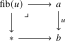

Lemma 19.2.1. Let \(A\) and \(B\) be pointed right exact categories. If either \(A\) or \(B\) is stable, then both \(A\otimes B\) and \(\Rex(A,B)\) are stable.
Proof
Assume that \(A\) is stable. The suspension functor \(\Sigma\colon A\to A\) induces a functor \[ \Sigma\otimes\id_B\colon A\otimes B\to A\otimes B \] that is isomorphic to the suspension of \(A\otimes B\). To see this, one can for instance use the canonical equivalence \[ (\FinAn_\bullet\otimes A)\otimes B\simeq\FinAn_\bullet\otimes(A\otimes B) \] and conclude with Remark 18.7.16. This implies that \(A\otimes B\) is stable. The case where \(B\) is stable is deduced from the equivalence \(A\otimes B\simeq B\otimes A\).
Similarly, if \(A\) is stable, Lemma 18.7.13 implies that the suspension on \(\Rex(A,B)\) is induced from the one on \(A\) and thus that it is an equivalence. The fact that \(\Rex(A,B)\) is stable whenever \(B\) has this property is even more tautological.
Theorem 19.2.2. The embedding \(\StabCat\hookrightarrow\RexCat_\bullet\) has a right adjoint given by the assignment \[ B\mapsto\Rex(\SpW(\FinAn_\bullet),B)\, . \] In particular, it commutes with small colimits.
Proof
Given \(A\) a small stable category and \(B\) a small pointed right exact category, since \((-)\otimes A\) commutes with colimits in \(\RexCat_\bullet\) (being a left adjoint, by definition in \(\RexCat\), but then also in \(\RexCat_\bullet\), by Proposition 18.7.15), and since the category \(\omega\) is weakly contractible, we see that \begin{align*} A &=\FinAn\otimes A\\ &= \FinAn_\bullet\otimes A\\ &= \SpW(\FinAn_\bullet)\otimes A\, . \end{align*} Therefore, we have: \begin{align*} \Rex(A,B) &=\Rex(\SpW(\FinAn_\bullet)\otimes A,B)\\ &=\Rex(A,\Rex(\SpW(\FinAn_\bullet),B))\, . \end{align*} Since, by virtue of Lemma 19.2.1 and Theorem 19.1.7, \(\Rex(\SpW(\FinAn_\bullet),B)\) is stable, this implies the theorem right away.
Construction 19.2.3. Let \(C\) be a pointed left exact category. We denote by \(\Sp(C)\) the Milnor limit of the diagram \[ \cdots\to C\xrightarrow{\ \Omega \ } C\xrightarrow{\ \Omega \ }\cdots\xrightarrow{\ \Omega \ } C\xrightarrow{\ \Omega \ }C\, . \]
Corollary 19.2.4. For any pointed left exact category \(C\), \(\Sp(C)\) is a stable category.
Proof
We have \(\Sp(C)=\Rex(\SpW(\FinAn_\bullet),C\catop)\catop\). We conclude with Lemma 19.2.1 and Theorem 19.1.7.
Definition 19.2.5. Let \(\An_\bullet=\An_{*/}\) be the category of small pointed animae. The stable category \(\Sp\) of (small) spectra is defined as \[ \Sp:=\Sp(\An_\bullet)\, . \]
Lemma 19.2.6. Let \(C\) be a pointed right exact category with pullbacks. Then \(C\) is a stable category if and only if \(C\catop\) is a stable category.
Proof
Since \(C\) has pullbacks with a terminal object that is also initial, one can
apply Remark 18.7.8 to \(C\catop\) and translate it
to properties of \(C\): this means that the functor
\[
0_*\colon C\to\Fun([1],C)
\]
has a right adjoint
\[
0^!\colon\Fun([1],C)\to C
\]
that takes a map \(u\colon a\to b\) in \(C\) to its fiber \(0^!(u)=\fib(u)\)
appearing in the pullback below.

Proposition 19.2.7. For any (small) pointed right exact category \(C\), we have \[ \Lex(\SpW(C)\catop,\An)\simeq\Lex(C\catop,\Sp)\, . \]
Proof
Since \(C\) is pointed we have \[ \Lex(C\catop,\An)=\Lex(C\catop,\An_\bullet) \] functorially in \(C\). It is clear from Lemma 18.7.13 that the functor \(\Lex((-)\catop,\An_{\bullet})\) takes the diagram \[ C\xrightarrow{\ \Sigma \ }C\xrightarrow{\ \Sigma \ }\cdots\to C\xrightarrow{\ \Sigma \ } C\xrightarrow{\ \Sigma \ }\cdots \] to the diagram \[ \cdots\to \Lex(C\catop,\An_\bullet)\xrightarrow{\ \Omega \ }\Lex(C\catop,\An_\bullet) \xrightarrow{\ \Omega \ }\cdots \xrightarrow{\ \Omega \ }\Lex(C\catop,\An_\bullet)\xrightarrow{\ \Omega \ }\Lex(C\catop,\An_\bullet) \] itself isomorphic to the image of \[ \cdots\to \An_\bullet\xrightarrow{\ \Omega \ }\An_\bullet\xrightarrow{\ \Omega \ }\cdots \xrightarrow{\ \Omega \ }\An_\bullet\xrightarrow{\ \Omega \ }\An_\bullet \] through the functor \(\Lex(C\catop,-)\). We conclude by observing that the functor \(\Lex(C\catop,-)\) preserves limits.
Corollary 19.2.8. For any small stable category \(C\), there is a canonical equivalence \[ \Ind(C)\simeq\Lex(C\catop,\Sp)\, . \]
Proof
Since \(C\) is stable, the canonical functor \(C\to\SpW(C)\) is an equivalence. We conclude with Proposition 19.2.7 above and Remark 18.2.7.
Corollary 19.2.9. The idempotent completion of a small stable category is stable.
Proof
The idempotent completion of a small category \(C\) with finite colimits is obtained by taking the full subcategory of compact objects in \(\Ind(C)\). If \(C\) is stable, then so is \(\Ind(C)\) (by Lemma 19.2.1, Lemma 19.2.6 and Corollary 19.2.8), and the suspension functor on the idempotent completion of \(C\) is obtained from the one on \(\Ind(C)\) by functoriality, hence is an equivalence.
Corollary 19.2.10. The category of spectra is stable and compactly generated. More precisely, there is a canonical equivalence \[ \Lex(\SpW(\FinAn_\bullet)\catop,\An)\simeq\Sp\, . \]
Proof
We already know that \(\Sp\) is stable by Corollary 19.2.4. On the other hand, Proposition 19.2.7 for \(C=[0]\) yields \[ \Lex(\SpW(\FinAn_\bullet)\catop,\An)= \Lex((\FinAn_\bullet)\catop,\Sp)\, . \] But since \(\Sp\) is pointed, we also have \[ \Lex((\FinAn_\bullet)\catop,\Sp)=\Lex((\FinAn)\catop,\Sp)=\Sp\, . \]
Notation 19.2.11. The preceding corollary together with Theorem 18.2.8 implies that the functor \[ \FinAn_\bullet\to\SpW(\FinAn_\bullet)\ , \quad x\mapsto \Sigma^\infty(x) \] extends to a small colimit preserving functor \[ \Sigma^\infty\colon\An_{\bullet}\to\Sp \] that has a right adjoint \[ \Omega^\infty\colon\Sp\to \An_{\bullet}\, . \] We observe that if \(S^0=*_+\), then \(\Omega^\infty=\Hom_\Sp(\Sigma^\infty(S^0),-)\) (see Remark 12.8.3).
Proposition 19.2.12. A morphism of spectra \(u\colon E\to F\) is an isomorphism if and only if, for any integer \(n : \N\), the induced map \[ \Omega^\infty(\Sigma^n(u))\colon\Omega^\infty(\Sigma^n(E))\to\Omega^\infty(\Sigma^n(F)) \] is an equivalence.
Proof
Let \(C\) be the full subcategory of \(\Sp\) whose objects are those spectra \(X\) such that \[ u_*\colon\Hom_\Sp(X,E)\to\Hom_\Sp(X,F) \] is an isomorphism. Assuming that \(\Omega^\infty(\Sigma^n(u))\) is an equivalence for all \(n\) means that \(C\) contains \(\Omega^n(\Sigma^\infty(S^0))\) for all \(n : \N\). On the other hand, \(C\) clearly is stable under small colimits in \(\Sp\). There is a unique right exact functor \[ \FinAn_\bullet\to C \] sending the point to \(\Sigma^\infty(S^0)\). Since \(C\) is stable, this extends to a unique right exact functor \[ i\colon \SpW(\FinAn_\bullet)\to C \] sending \(\Sigma^\infty(S^0)\) to itself. Theorem 18.2.10 implies that there is a unique small colimits preserving functor \[ i_!\colon\Lex(\SpW(\FinAn_\bullet)\catop,\An)\to C \] extending \(i\). Corollary 19.2.10 together with a new application of Theorem 18.2.10 tell us that composing \(i_!\) with the full embedding \(C\hookrightarrow\Sp\) is the identity. Therefore, \(C=\Sp\). This proves that \(u\) is an isomorphism.